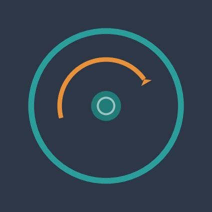

Boot Sovereign.
Architecture-Driven Intelligent Operating System
We help the daring build legendary sovereign AI.
The Operating System
Every generation of computing has been defined by its operating system. DOS gave us the command line. Unix gave us multi-user computing. Windows gave us the GUI. Linux gave us the server. Android gave us the pocket. Each era's OS was not just software — it was the substrate of possibility.
We are at the threshold of a new era. Intelligence is moving from the cloud to the kernel. From external service to foundational layer. The question is not whether AI will be embedded into enterprise infrastructure — it is whether that intelligence will be sovereign or rented.
The Three-Layer Brain
Intelligence without trust is noise. The AdiOS Brain structures knowledge across three tiers — each assertion earning its confidence score through review, validation, and provenance.
Trust Promotion Flow
Three Pillars
Every intelligent query touches three foundational systems simultaneously. Not sequential — concurrent. This is what makes AdiOS architecturally distinct.
Brain
The knowledge graph and trust layer. Three-tier hierarchy from personal assertion to enterprise truth. Every fact carries confidence and provenance.
Lakehouse
Unified data fabric. Time-series, geospatial, and quantitative context. All data remains local — zero cloud egress, full provenance chain.
Governance
Sentinel enforcement layer. Policy-driven access control with audit trails. Sovereign from day one — no data leaves without explicit, logged permission.
Architecture
Five divisions. Thirty-eight components. One coherent system — designed from first principles, not assembled from parts.
The Circular Loop
AdiOS is not a static platform. Every interaction compounds. Every node improves every other node. This is not a feature — it is the foundational architecture.
The Market
The sovereign AI infrastructure market does not yet exist at scale. AdiOS is not competing for a slice of the pie — it is defining the category.
The Company
Revenue Architecture
Enterprise Licensing
Annual sovereign OS license. Per-division deployment. On-premise or private cloud. SLA-backed with dedicated support.
Platform Subscriptions
Developer and team tiers. API access, SDK, and marketplace. Usage-based scaling with governance included at every tier.
Ecosystem Marketplace
Third-party modules, intelligence packs, and vertical solutions. Platform take-rate on all marketplace transactions. Network effects drive margin.
Geographic Expansion
interlocking patent claims filed.
The moat is the dependency chain — you can't copy one piece.
intelligence at the kernel, not the cloud."
38 components, five divisions, three pillars."
every node makes every other node smarter."

Join the Early Access Program
AdiOS is now accepting enterprise and developer partners for early access. Be among the first to deploy sovereign AI infrastructure.